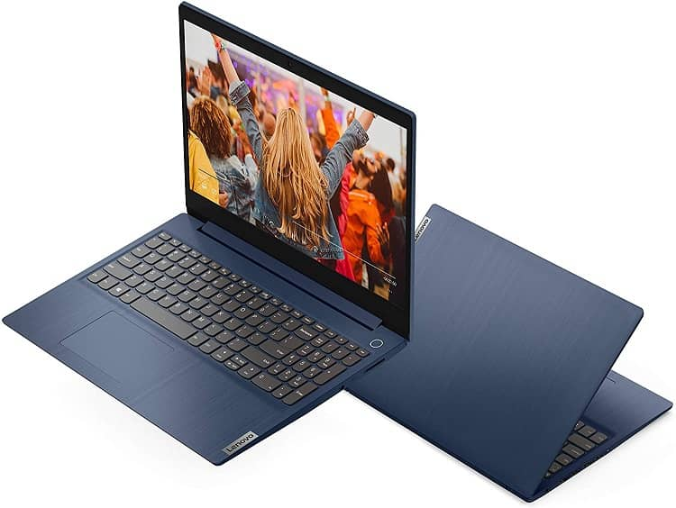
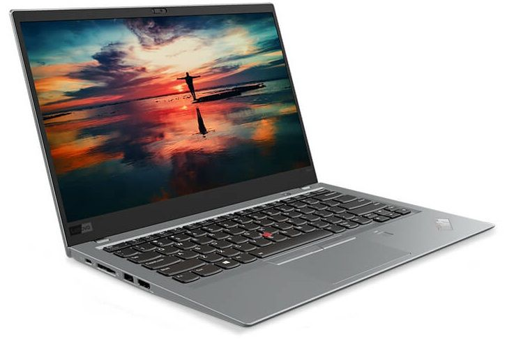

| لاب توب lenovo thinkpad |
1-lenovo ThinkPad X1 Carbon
- معالج من الجيل العاشر اصدارات Core i7 و Core i5 .
- الشاشة : 14 بوصة HDR WQHD بدقة 1440× 2560 بكسل IPS glossy مع Dolby Vision تدعم اللمس 500 شمعه .
- 14 بوصة تصل الي جودة WQHD بدقة 1440× 2560 بكسل IPS مضاد للتوهج 300 شمعه .
- معُالج الرسوميات ( كرت الشاشه VGA ) : مدمج Intel® UHD Graphics 620 .
- الذاكرة العشوائية : تصل الي 16 جيجا بايت رام LPDDR3 بسرعة 2133 ميجا هرتز .
- ذاكرة التخزين : تصل الي 1 تيرا بايت PCIe-NVME SSD OPAL2.0 .
- بطارية : 57 وات ليثيوم أيون دعم الشحن السريع .
- السعر العالمي يبدأ من 1280 دولار أمريكي و في مصر بسعر 40000 جنية .
|
2 - لاب توب Lenovo ThinkPad X13 (AMD
- وحدة معالجة مركزية من نوع : AMD Ryzen 5 Pro 4650U .
- كارت شاشة من نوع : AMD Radeon .
- ذاكرة وصول عشوائي ( رامات ) بحجم : 8 جيجا بايت .
- سعة تخزين داخلية تصل الي : 256 جيجا بايت .
- شاشة بمقياس : 13.3 بوصة وبتقنية 1080 بكسل .
- ابعاد الجهاز : 12.3 x 8.6 x 0.7 انش .
- وزن الجهاز يصل الى : 2.8 باوند .
يبلغ سعر الجهاز حوالي : 974 دولار امريكي .
|
 |
|
| لاب توب lenovo ideapad |
1 - اب توب Lenovo Ideapad 330 Celeron
- بسعر يبدأ من 6500 جنيه.
- معالج : Intel® Celeron® N4000 بسرعة 1.1 جيجا هرتز ( بسرعة تصل الي 2.6 جيجا هرتز ، ذاكرة مؤقتة 4 ميجا بايت ، عدد النواه:2 )
- الذاكرة العشوائية :4 جيجا بايت DDR4 بسرعة 2400 ميجا هرتز أو 2133 ميجا هرتز
تصل الي 16 جيجا بايت رام DDR4 بسرعة 2400 ميجا هرتز أو 2133 ميجا هرتز .
- كرت شاشة : مدمج Intel UHD Graphics 605
- مدمج Intel UHD Graphics 600 .
- شاشة : 15.6 بوصة بإضاءة خلفية LED ودقة عالية الوضوح FHD بدقة 1080× 1920بكسل مضادة للتوهج
- 15.6 بوصة بإضاءة خلفية LED ودقة عالية الوضوح HD بدقة 1366 × 768 بكسل مضادة للتوهج .
- هارد ديسك HDD بسعة : 500 جيجا بايت / 1 تيرا بايت 5400 لفة في الدقيقة .
- البطارية : 2 خلايا 30 وات ليثيوم بوليمر
- 3 خلايا 45 وات ليثيوم بوليمر .
|
2 - لاب توب Lenovo IdeaPad 330-15AS
- بسعر يبدأ من 6500 جنيه.
- معالج : AMD A9-Series A9-9425 بسرعة 3.10 جيجا هرتز (بسرعة تصل الي 3.70 جيجا هرتز ، ذاكرة مؤقتة 1 ميجا بايت ، عدد النواة 2 )
- معالج AMD E2-9000 , بسرعة 1.8 جيجا هرتز (ذاكرة مؤقتة 1 ميجا بايت ، تصل الي 2.2 جيجا هرتز ، عدد النواة: 2) .
- الذاكرة العشوائية : 4 او 8 جيجا بايت رام DDR4 بسرعة 1866ميجا هيرتز لاصدار AMD E2-9000
- 4 او 8 جيجا بايت رام DDR4 بسرعة 2133 هيرتز لاصدارات الأخري .
- كرت شاشة : مدمج AMD Radeon™ R2 لمعالج AMD E2-900
شاشة : 15.6 بوصة بإضاءة خلفية LED ودقة عالية الوضوح FHD بدقة 1080× 1920بكسل مضادة للتوهج
- 15.6 بوصة بإضاءة خلفية LED ودقة عالية الوضوح HD بدقة 1366 × 768 بكسل مضادة للتوهج .
- هارد ديسك HDD بسعة : 1 أو 2 تيرا بايت بمعدل 5400 لفة في الدقيقه.
- هارد ديسك SSD بسعة : 128 / 256 جيجا بايت تأكد قبل الشراء متاح فقط في اصدارات محدوده .
- البطارية : 2 خلايا 30 وات ليثيوم بوليمر
|
 |